기상기사 (2016-03-06 기출문제)
1과목: 기상관측법
1. 기상위성 관측에 대한 설명 중 틀린 것은?
- 궤도 위성은 극지방 관측이 용이하다.
- 궤도 위성은 중규모 기상 관측에 적당하다.
- 정지 위성은 종관 규모기상 관측에 적합하다.
- 정지 위성은 적도나 극지방 모두 관측이 용이하다.
(정답률: 70%)

2. 기상요소별 기상관측환경에 관한 기준 중 강수량계 설치기준 중 강수량계 설치기준으로 옳지 않은 것은?
- 강수량계 주위에 바람 보호막을 설치하는 것을 권장한다.
- 강수량계 수수구의 높이는 지면 또는 옥상 바닥면에서 30cm 이하이어야 한다.
- 주변 장애물로부터 수수구와 장애물 높이 차이의 최소 2배 이상 이격하여 설치하여야 한다.
- 주위 환경을 고려할 필요가 있는 경우에는 전문가단을 구성하여 평가 및 자문을 구하여 최소한의 기상관측환경이 유지되는 방향으로 기상측기의 설치 기준을 조정할 수 있다.
(정답률: 69%)
3. 전기식 온도계(Electric thermometer)의 설명으로 적합하지 않은 것은?
- 정확하고 감도가 좋다.
- 저항을 이용한 형도 있다.
- 자기 기록용으로 부적합하다.
- 서머커플(Thermo couple)형도 있다.
(정답률: 84%)
4. 기상레이더의 하드웨어 캘리브레이션 항목이 아닌 것은?
- 레이돔 손실
- 레이더 진동수
- 레이더 트리거
- 레이더 첨두출력
(정답률: 72%)
5. 관측된 바람의 방향과 세기를 극좌표상의 벡터로 표현한 것은?
- 벡터
- 풍정
- 바람벡터
- 풍향 및 풍속
(정답률: 79%)
6. 일사 관측에 대한 설명 중 틀린 것은?
- 직달일사 관측은 은반 일사계로 관측한다.
- 수평면 일사관측은 조르단 일조계로 관측한다.
- 일사량의 단위는 [lyㆍmin-1], [calㆍcm-2hr-1], [calㆍcm-2ㆍday-1]로 표시한다.
- 일사량이란 지구표면에서 받는 태양열량의 강도를 말하는 것이며 직사일사와 수평면일사로 구분된다.
(정답률: 72%)
7. 해발고도가 29m인 관측소에서 현지기압이 1014hPa, 기온이 16℃로 관측되었다. 이 때 해면경정한 기업 값은? (단, 표준중력은 9.8m/s2이며, 기체상수는 287.04J/kgㆍK이다.)
- 약 1.5hPa
- 약 3.5hPa
- 약 6.7hPa
- 약 9.8hPa
(정답률: 57%)
8. 다음 기상관측요소 중에서 현재 상태를 나타내는 대푯값을 얻기 위한 평균시간이 다른 하나는?
- 기압
- 기온
- 습도
- 풍속
(정답률: 77%)
9. 하늘상태에서는 적운(쎈구름)과 적난운(쎈비구름)을 어느 구름에 포함시키는가?
- 상층운(CH)
- 중층운(CM)
- 하층운(CL)
- 적운-하층운, 적란운-상층운
(정답률: 92%)
10. 대기 1m3 중에 포함되어 있는 수증기의 질량(g)을 표시한 것은?
- 비습
- 혼합비
- 실효습도
- 절대습도
(정답률: 79%)
11. 다음 기상 요소 중 지표면에서 증발량의 변화에 가장 영향을 미치지 않는 것은?
- 기온
- 풍속
- 풍향
- 일사량
(정답률: 94%)
12. 우량계 수수구(手授器)의 일반적인 직경은?
- 10cm
- 20cm
- 30cm
- 40cm
(정답률: 72%)
13. 바람관측에 대한 설명으로 옳지 않은 것은?
- 풍향은 관측시각 전 10분간의 평균 풍향을 말한다.
- 풍속의 단위는 m/s를 사용하는 것을 원칙으로 한다.
- 지표면의 마찰을 고려하여 지상 10m의 풍속을 표준으로 한다.
- 풍속이 0.5m/s 이하일 때는 정온(calm)으로 표시하고 풍향은 없는 것으로 한다.
(정답률: 80%)
14. 해양기상현상에 대한 설명 중 옳지 않은 것은?
- 천문조는 1년 중 밀물 수위가 가장 높은 현상이다.
- 풍랑은 풍속이 강하여 취속시간이 길고 취주거리가 길수록 발달한다.
- 풍량의 크기는 바람의 세기, 지속시간, 취송거리 3가지에 의하여 결정된다.
- 유의파는 불규칙한 해면을 일정의 기준으로서 처리하기 위해 도입된 일종의 통계량이다.
(정답률: 67%)
15. 레윈존데이의 관측요소가 아닌 것은?
- 기온
- 구름
- 바람
- 습도
(정답률: 75%)
16. 적외센서로 탐사한 적외영상에 대한 설명으로 옳지 않은 것은?
- 적외영상에서는 운정온도를 알 수 있다.
- 적외영상에서는 대기상층의 수증기량을 알 수 있다.
- 적외영상은 밤과 낮 구별 없이 활용이 가능하다.
- 적외영상에서는 구름이 없을 경우 해수면의 온도를 알 수 있다.
(정답률: 59%)
17. 주간시정 목표물의 선택에 있어서 적합하지 않은 조건은?
- 가능한 거리가 다른 많은 목표물을 선택한다.
- 시각(視角)이 0.5° 이상인 크기의 목표를 선택한다.
- 지면을 배경으로 서 있는 밝은 물체를 선택한다.
- 하늘을 배경으로 서 있는 검은 물체를 선택한다.
(정답률: 77%)
18. 광환(corona)이 가장 잘 나타나는 구름은?
- Ac
- As
- Ci
- Cs
(정답률: 25%)
19. 시정관측에 관한 주의 사항 중 옳은 것은?
- 관측자는 지면에 선 채로 눈으로 관측하면 된다.
- 넓게 볼 수 있도록 높은 곳에서 관측하여야 한다.
- 밤에는 유리창을 통하여 관측하여도 무방하다.
- 눈이 나쁜 관측자는 쌍안경으로 목표물을 확인하는 편이 좋다.
(정답률: 77%)
20. 다음 구름 중 강수현상이 동반되지 않는 것은?
- 층운
- 권층운
- 난층운
- 적란운
(정답률: 72%)
2과목: 대기열역학
21. 다음 조건에서 LCL(상승응결고도)을 구할 수 없는 것은?
- 습구온도와 가온도
- 건구온도와 혼합비
- 건구온도와 노점온도
- 건구온도와 습구온도
(정답률: 70%)
22. 다음 중 ()속에 들어갈 것은?
- 고도
- 기온
- 밀도
- 습도
(정답률: 50%)
23. 수증기를 포함한 공기덩어리가 단열 상승할 때 응결 전에는 일정한 값을 가지다가 응결한 후에는 그 값이 증가하는 것은?
- 온위
- 가온도
- 노점온도
- 수증기압
(정답률: 74%)
24. 위습구온위가 높이에 따라 감소하면?
- 대류안정
- 대류중립
- 절대안정
- 대류불안정
(정답률: 67%)
25. 건조공기에서 (등압비열/등적비열)의 값은?
- 0.71
- 0.78
- 1.40
- 3.78
(정답률: 79%)
26. 다음 중 엔탈피(enthalpy, h)의 정의로 옳은 것은? (단, Cu, Cp, R은 각각 정적비열, 정압비열, 기체상수이다.)
- dh=CpdT
- dh=CudT
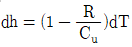
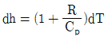
(정답률: 77%)
27. 깊은 대류운이 발달하고 있는 해양대기의 연직(열역학적)구조는 보통 어떤 상태에 있는가?
- 중립
- 절대안정
- 절대불안정
- 조건부 불안정
(정답률: 53%)
28. 다음 중 엔탈피가 가장 큰 상태는?
- 0℃, 500hPa, 10m3
- 0℃, 1,000hPa, 10m3
- 10℃, 500hPa, 10m3
- 10℃, 1,000hPa, 10m3
(정답률: 67%)
29. 대류 불안정도(Convective Instability)에 대한 설명으로 옳은 것은?
- 불포화상태의 공기층이 상승하여 포화되었을 때의 불안정도
- 공기 덩어리가 건조 단열적으로 상승하였을 때 갖는 불안정도
- 공기 덩어리가 습윤 단열적으로 상승하였을 때 갖는 불안정도
- 공기층에 연직 쉬어(shear)가 존재할 때 공기층이 갖는 불안정도
(정답률: 36%)
30. CpdT-adp=0가 성립하는 과정은? (단, 여기서 Cp는 정압비열, a는 비적을 의미함)
- 단열과정
- 등압과정
- 등온과정
- 비단열과정
(정답률: 84%)
31. 압력의 단위로 맞는 것은?
- erg/cm2
- dyne/cm2
- cm2/erg
- cm2/dyne
(정답률: 79%)
32. 가로축을 부피 ,세로축을 압력으로 하는 좌표면에서 등온선의 형태는? (단, 이상기체의 경우를 가정하시오
- 직선
- 쌍곡선
- 포물선
- 대수곡선
(정답률: 88%)
33. 다음 설명 중 틀린 것은?
- 공기의 정압비열은 정적비열보다 크다.
- 공기의 온도 변화에 대한 엔탈피(enthalpy)의 변화는 일정하며 이는 정압 비열과 같다.
- 온위의 대수적 변화에 대한 엔트로피의 변화는 일정하며 이는 정압 비열과 같다.
- 임의 기체 온도의 변화에 대한 내부 에너지 변화율은 일정하며 이는 정압 비열과 같다.
(정답률: 59%)
34. 두 등압면의 고도차 즉 대기층의 층두께(thickness)와 가온도(virtual temperature)에 대한 관계식으로 맞는 것은? (단, △h는 층후,
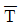
는 그 대기층의 평균 가온도이다.)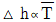
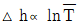
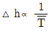
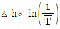
(정답률: 43%)
35. 정역학 방정식(Hydrostatic equation)△P = -ρg△z에서 음의 부호는 고도에 따른 무엇을 의미하는가?
- 기압 갑소
- 기압 증가
- 중력 감소
- 증력 증가
(정답률: 75%)
36. 밀도가 균일한 등밀대기(homogeneous atmosphere)에서 중력이 5 ms2 ,기체상수가 250 JK-1kg-1인 대기에서의 건조공기의 기온감률은?
- 1 K/100m
- 1.25 K/ 100m
- 2K/ 100m
- 5K/ 100m
(정답률: 64%)
37. 등온 등압 상태에서 같은 부피에 포함되어 있는 기체 분자 수가 같다는 법칙은?
- 달톤의 법칙
- 보일의 법칙
- 샤롤의 법칙
- 아보가드로의 법칩
(정답률: 62%)
38. 압력 P, 온도 T인 공기를 습윤단열 과정으로 1000 hPa 고도면까지 가져왔을 때, 이 공기의 온도는?
- 상당온도
- 상당온위
- 습구온도
- 습구온위
(정답률: 54%)
39. 지위고도(geopotential height)에 대한 올바른 표현은? (단. R은 기체상수, g는 중력상수, T는 기온, P는 기압)
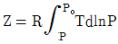
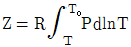
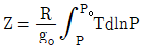
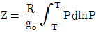
(정답률: 67%)
40. 건조공기의 비기체상수 값은?
- 0.286J kg-1K-1
- 8.314J kg-1K-1
- 28.96J kg-1K-1
- 287J kg-1K-1
(정답률: 48%)
3과목: 대기운동학
41. 만유인력의 vector와 중력 vector가 이루는 각이 최대인 곳은?
- 적도
- 30°N
- 45°N
- 60°N
(정답률: 40%)
42. 전향력과 원심력이 균형을 이루는 흐름은?
- 관성류
- 지균류
- 경도류
- 선형류
(정답률: 63%)
43. 코리올리힘(Coriolis force)에 대한 설명으로 틀린 것은?
- 바람이 등고선에 평행하게 불게 되는 원인이 된다.
- 코리올리힘은 운동의 방향과 속력을 변화시킨다.
- 코리올리힘은 물체가 움직이는 방향에 직각으로 작용한다.
- 위도 Φ에서 수평속도 로 움직이고 있으면 코리올리힘은 2Ωu sinΦ이다.
(정답률: 65%)
44. 온도풍(thermal wind)에 대한 설명으로 옳은 것은?
- 두 층의 바람 벡터의 차
- 두층의 바람 크기의 차
- 두층의 지균풍의 벡터 차
- 고온에서 저온으로 부는 바람
(정답률: 81%)
45. 절대와도 보존의 법칙에 관한 설명 중 옳은 것은?
- 절대와도는 항상 보존된다.
- 순압 와도 방정식은 곧 절대와도 보존의 법칙을 말한다.
- 절대와도 보존의 법칙에 의하면 남쪽으로 이동하는 공기는 오른쪽으로 힘을 받는다.
- 회전하던 스케이터가 양팔을 오므리면 더 빠르게 회전을 하는데 이것을 절대와도 보존의 법칙으로 설명할 수 있다.
(정답률: 40%)
46. 말 위도 (horse latitude)는 무엇의 결과인가?
- 극 전선대
- 극 고기압
- 열대 수렴대
- 아열대 고기압
(정답률: 69%)
47. 다음 ( )에 알맞은 내용으로 짝지은 것은?
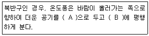
- A : 왼쪽, B:등온선
- A : 왼쪽, B:등고선
- A : 오른쪽, B:등온선
- A : 오른쪽, B:등고선
(정답률: 62%)
48. 온난이류(warm advection)를 나타내는 것은? (단,
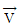
는 바람벡터, T는 기온을 나타낸다.)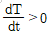
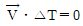
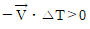
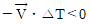
(정답률: 62%)
49. 기순환의 다음 규모 중 온대저기압이 속하는 것은?
- 대규모
- 작은 규모
- 종관규모
- 중간 규모
(정답률: 75%)
50. 북반구에서 코리올리힘의 작용방향은 물체 운동 방향에 때하여 어떠한가?
- 우측직각
- 좌측지각
- 같은방향
- 반대방향
(정답률: 85%)
51.
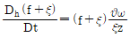
는 수평발산 또는 수렴에 따른 절대와도의 변화를 기술하는 와도방정식이다. 다음 설명 중 맞는 것은? (단, f:행정와도, ξ:상대와도)- 수평발산이 있으면 상대와도는 감소한다.
- 수평발산이 있으면 행성와도는 감소한다.
- 수평수렴이 있으면 절대와도는 증가한다.
- 수평수렴이 있으면 시계방향의 흐름이 약화된다.
(정답률: 58%)
52. 다음 대기파(atmospherie wave) 중 가장 빠른 파는?
- 음파
- 관성파
- 중력파
- 로스비파
(정답률: 75%)
53. 에너지 캐스케이드(cascade)란 다음 중 어떠한 에너지 변환을 나타내는가? (단, E는 에너지를 의미한다.)
- 위치 E → 평균 운동 E → 에디 운동 E
- 위치 E → 에디 운동 E → 평균 운동 E
- 평균 운동 E → 위치 E → 에디 운동 E
- 평균 운동 E → 에디 운동 E → 위치 E
(정답률: 47%)
54. 북반구 상층 원형 고기압에서 부는 바람의 특성이 아닌 것은?
- 시계방향으로 분다.
- 전향력 방향의 각각 오른쪽으로 분다.
- 고기압 중심으로 갈수록 풍속이 약해진다.
- 기압경도력, 전향력, 원심력이 균형을 이루며 분다.
(정답률: 27%)
55. 아래 그림과 같은 경우, 남반구에서 A지점의 지균퓽향은?
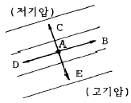
- B
- C
- D
- E
(정답률: 53%)
56. 속도장이 u=u0+Ucos(kr), u=Vsin(kr+ly)로 주어졌을 경우 와도장을 바르게 표시한 것은?
- l Vcos(kx+ly)
- k Vcos(kx+ly)
- Ucos(kx)+Vsin(kx+ly)
- -kU sin(kx)+l Vcos(kx+ly)
(정답률: 50%)
57. 다음 중 혼합층에서 연직방향으로 변화가 가장 심한 것은?
- 비습
- 열속
- 온위
- 운동량
(정답률: 31%)
58. Rossby에 의한 장파이동속도(C)는 다음과 같이 나타난다. 이 때 장파가 서쪽에서 동쪽으로 이동하는 경우에 해당하는 것은? (단, U는 평균대상풍속, L은 파장, B는 코리올리 인자의 위도 변화)
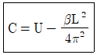
- U＞C＞0
- U＞C=0
- U＞0＞C
- C＞0＞U
(정답률: 70%)
59. 700hPa과 500hPa 사이의 평균 온도가 같은 두 공기덩이를 가정할 때, 수증기의 포함정도에 따른 층후 두께변화는?
- 둘 다 같다.
- 건조공기의 경우가 더 크다.
- 습윤공기의 경우가 더 크다.
- 건조공기, 습윤공기 모두 클 수도 작을 수도 있다.
(정답률: 34%)
60. 대기대순환에서 경도적으로 변하는 대표적인 순환을 크게 몇 개로 구분되는가?
- 1
- 2
- 3
- 4
(정답률: 69%)
4과목: 기후학
61. 다음 중 최근의 소빙기가 나타난 사기로 가장 적합한 것은?
- 3세기~7세기
- 7세기~11세기
- 11세기~15세기
- 16세기~19세기
(정답률: 67%)
62. 지구로 들어오는 태양에너지 중 지면으로 직접 도달되는 에너지의 양은?
- 약 40%
- 약 50%
- 약 80%
- 약 100%
(정답률: 83%)
63. 습도의 연변화형 중 우기가 있는 계정에만 습도가 높게 나타나는 것끼리 이어진 것은?
- 대륙성-열대성
- 몬순선-열대성
- 열대성-해양성
- 해양성-몬순성
(정답률: 54%)
64. 보웬 비(Bowen ratio)에 대한 다음 설명 중 맞는 것은?
- 위도에 상관없이 거의 일정하다.
- 적도에서 작고, 고위도로 갈수록 커진다.
- 고위도에서 작고, 저위도로 갈수록 커진다.
- 중위도에서 가장 작고 고위도와 적도에서 크다.
(정답률: 63%)
65. 1816년 여름이 없는 해(Year without summer)의 직접적인 원인은?
- 적도 라니냐 현상
- 적도 엘니뇨 현상
- 상층 대기 흐름의 저지(blocking)
- 인도네시아 Tambora 화산 폭발
(정답률: 77%)
66. 기후인자로서 적합하지 않은 것은?
- 위도
- 해류
- 해발고도
- 지구자전
(정답률: 59%)
67. Koppen의 기후구분 중 우리나라는 어느 분류에 해당하는가?
- Af
- Bw
- Cs
- Dw
(정답률: 36%)
68. 위도에 따른 강수량의 분포를 옳게 나타낸 그림은? (단, 가로축 위도(-90°~90°), 세로축 강수량)
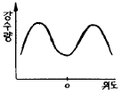
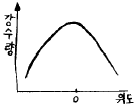
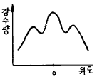
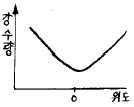
(정답률: 72%)
69. 마파람이란 무슨 바람인가?
- 동풍
- 서풍
- 남풍
- 북풍
(정답률: 60%)
70. 우리나라 기후의 일반적 특성이 아닌 것은?
- 남부지방의 연강수량은 1500mm 정도이다.
- 연평균 기온은 6~16°C 분포로 지역 차가 크다.
- 습도는 9월에 가장 높아 80~90%의 분포를 보인다.
- 쾨펜의 11개 주요 기후구 중 주로 C와 D의 기후구에 속한다.
(정답률: 91%)
71. 다음 중 불쾌지수가 가장 높은 경우는?
- 건구온도: 15도, 습구온도: 10도
- 건구온도: 15도, 습구온도: 12도
- 건구온도: 20도, 습구온도: 12도
- 건구온도: 20도, 습구온도: 15도
(정답률: 50%)
72. 기후분류의 근거가 될 수 없는 것은?
- 물수지
- 대기작용
- 식생분포
- 인구밀도
(정답률: 84%)
73. 다음 중 우리나라의 전국 연평균 기온으로서 가장 적합한 것은?
- 약 6℃
- 약 9℃
- 약 12℃
- 약 18℃
(정답률: 75%)
74. 지구를 기압대로 구분할 때 적당하지 않은 것은?
- 극 고압대
- 적도 저압대
- 아열대 고압대
- 아한대 고압대
(정답률: 77%)
75. 대기의 대순환과 관련이 없는 풍계는?
- 몬순
- 무역풍
- 편서풍
- 해륙풍
(정답률: 85%)
76. 쾨펜은 수목(壽木)기후를 기온에 따라 A, C, D 기후로 나누고 이를 다시 f, w 및 s 기후로 세분하였다. 이 중에서 연중 습윤하여 건기가 없는 기후형은?
- f 기후형
- w 기후형
- s 기후형
- s 및 w 기후형
(정답률: 50%)
77. 다음 기단 중 위치적으로 가장 저위도에 형성되는 기단은?
- cP와 cT
- cP와 mP
- mP와 cT
- mT와 cT
(정답률: 72%)
78. 기후요소(氣候要素)라고 볼 수 없는 것은?
- 연강수량
- 태양고도
- 적산온도
- 건조지수
(정답률: 54%)
79. 다음은 열대태평량에 일어나는 현상을 그림으로 나타낸 것이다. 어떤 상태를 나타낸 것인가?
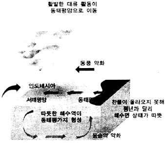
- 라니냐
- 엘니뇨
- 라니냐에서 엘니뇨로의 전환기
- 엘니뇨에서 라니냐로의 전환기
(정답률: 87%)
80. 우리나라의 겨울철에 영향을 주는 기단으로써 3한 4한온, 북서 계정풍, 꽃샘추위 등의 기후현상과 관련 있는 기단은?
- 적도 기단
- 북태평양 기단
- 시베리아 기단
- 오호츠크해 기단
(정답률: 88%)
5과목: 일기분석 및 예보론
81. 다음 중 대기의 운동을 단열과정으로 취급할 수 있는 요인으로 가장 적합한 것은?
- 대기의 온실효과
- 대기의 열전도도
- 태양복사의 산란
- 대기는 단시간 내에 태양 복사를 잘 흡수함
(정답률: 62%)
82. 지상기상전문의 Nddff란이 21299 00125이면 풍속은?
- 99knots
- 125knots
- 129knots
- 299knots
(정답률: 85%)
83. 상층일기도에서 등압면 일기도의 사용이 편리한 이유로 가장 적합한 것은?
- 전향력항이 고도에 따라 급격히 변하는 것을 고려할 필요가 없다.
- 원심력항이 고도에 따라 급격히 변하는 것을 고려할 필요가 없다.
- 밀도항이 고도에 따라 급격히 변하는 것을 고려할 필요가 없다.
- 중력 가속도항이 고도에 따라 급격히 변하는 것을 고려할 필요가 없다.
(정답률: 54%)
84. 장마전선은 일반적으로 어느 기단 사이에서 형성되는가?
- cP와 cT
- cP와 mP
- cT와 mP
- mP와 mT
(정답률: 72%)
85. 블로킹(Blocking) 현상을 설명한 것 중 가장 적절한 것은?
- 상층 블로킹 저기압은 따뜻한 성질을 보인다.
- 고압능에서 심한 악기상이 유발되는 경우가 많다.
- 고ㆍ저기압성 흐름이 동시에 나타나 장기간 머무른다.
- 상층 고기압이 우리나라에 위치할 때 우박 등 악기상이 발생하기 쉽다.
(정답률: 65%)
86. 중위도 서풍계에서 상층의 서풍 풍속이 일정할 때 장파(Rossby wave)의 이동에 대한 설명으로 적합한 것은?
- 파장이 긴 파가 더 빨리 진행한다.
- 파장과 진행속도와의 관계가 없다.
- 파장이 짧은 파가 더 빨리 진행한다.
- 여름에는 파장이 긴 파가, 겨울에는 짧은 파가 더 빨리 진행한다.
(정답률: 60%)
87. 소용돌이도가 영(0)이 아닌 지역은?
- 기압골
- 500hPa의 강풍 축
- 제트기류(Jet stream)의 축
- 양의 소용돌이도와 음의 소용돌이도의 경계
(정답률: 63%)
88. 온난전선 통과 시 바람이 변화하는 상태는?
- 풍향은 시계방향으로 변화하고 풍속은 증가한다.
- 풍향은 시계방향으로 변화하고 풍속은 감소한다.
- 풍향은 반시계방향으로 변화하고 풍속은 증가한다.
- 풍향은 반시계방향으로 변화하고 풍속은 감소한다.
(정답률: 65%)
89. 대기운동의 기본형에서 전선의 발생이나 소멸에 영향을 주지 못하는 운동은?
- 발산
- 수렴
- 변형운동
- 저기압성 회전
(정답률: 34%)
90. 지구가 자전하지 않는다면 지표면의 바람은 등압선에 대해서 어떻게 볼 것인가?
- 등압선과 평행하게
- 등압선과 직각으로
- 등압선에 대해서 수직 상향으로
- 동압선에 대해서 수직 하향으로
(정답률: 27%)
91. 다음 중 한랭전선에서 잘 나타나는 구름의 종류는?
- Ac
- As
- Cb
- Sc
(정답률: 79%)
92. 단열선도에서 850hPa면의 상승응결 고도에서 포화단열선을 따라 올라가 500hPa면과 만난 점의 온도 T를 500hPa면의 실제온도 T에서 뺀 값은?
- K 지수(Kl)
- 토털 지수(TTl)
- 치올림 안정지수(Ll)
- 쇼월터 안정지수(SSI)
(정답률: 75%)
93. 등순압모형(Equivalent Barotropic model)에서 연직속도를 유발하는 것은?
- 고도이류
- 습도이류
- 온도이류
- 와도이류
(정답률: 62%)
94. 장마전선에 관한 설명 중 틀린 것은?
- 일종의 정체전선이다.
- 위치를 파악할 때 지상의 노점온도, 850hPa의 전선대, 제트기류 등을 사용한다.
- 장마 말기에 기압골이 통과하거나, 태풍이 북상하게 되면 장마전선이 북상하여 종료되기도 한다.
- 저기압이 장마전선을 거느리고 진행하면 전면에서는 날씨가 비교적 좋고, 후면에서는 날씨가 악화된다.
(정답률: 53%)
95. 풍향과 풍속(ddff)의 보고는?
- 풍향과 풍속 모두 관측시각의 값이다.
- 풍향과 풍속 모두 관측시각 전 10분간의 평균값이다.
- 풍향은 관측시각의 값이며 풍속은 10분간의 평균값이다.
- 풍속은 관측시각의 값이며, 풍향은 10분간의 평균값이다.
(정답률: 50%)
96. 함수 f(x±△x)의 전진차분근사식(forward difference approximation)으로서 알맞은 것은?
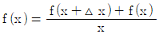
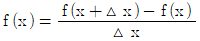
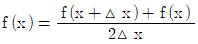
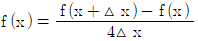
(정답률: 58%)
97. 장마전선에 의한 호우 시의 기압계 특징이 아닌 것은?
- 강풍대의 출현
- 상층기압골이 동쪽에 위치
- 소형저기압이 전선을 따라 이동
- 고온다습한 남서기류가 전선에 유입
(정답률: 50%)
98. 지상풍이 등압선과 평행하게 불지 않고 등압선을 가로지르는 이유는 무엇 때문인가?
- 원심력
- 기압 경도
- 지구의 중력
- 지표면의 마찰
(정답률: 69%)
99. 그림과 같이 흐름의 모양(실선)과 풍속(점선)의 분포를 가질 때 고기압성 소용돌이도가 가장 강하게 나타나는 것은? (단, 북반구를 기준으로 한다.)
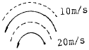
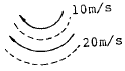
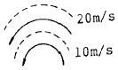
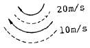
(정답률: 62%)
100. 가을철 자주 발생하는 이동성 고기압의 설명으로 틀린 것은?
- 기온의 일교차가 크다.
- 반드시 이류무가 생긴다.
- 중심부근에서는 바람이 약하다.
- 중심부근에서는 대개 맑은 날씨이다.
(정답률: 63%)
이유는 정지 위성은 지구의 자전과 동기화되어 항상 일정한 지점에서 고정되어 있기 때문에, 해당 지점 주변의 지역을 계속 관측할 수 있다. 따라서 적도나 극지방 모두를 관측할 수 있다.